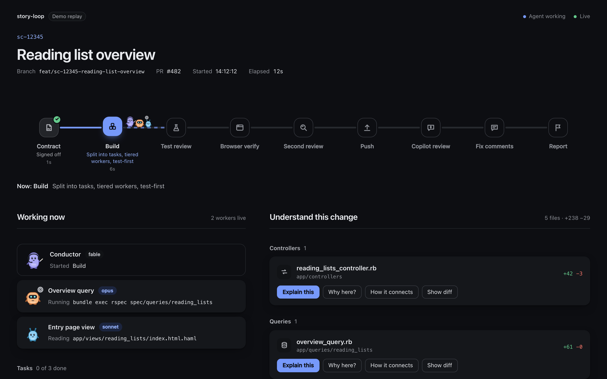
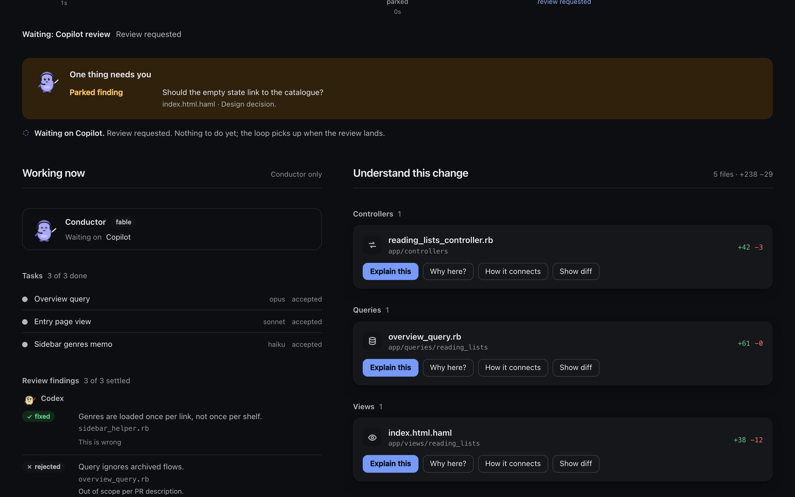
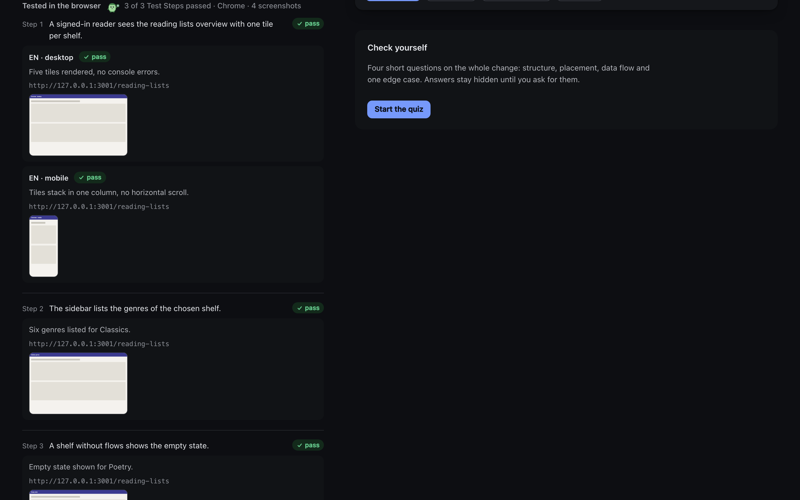
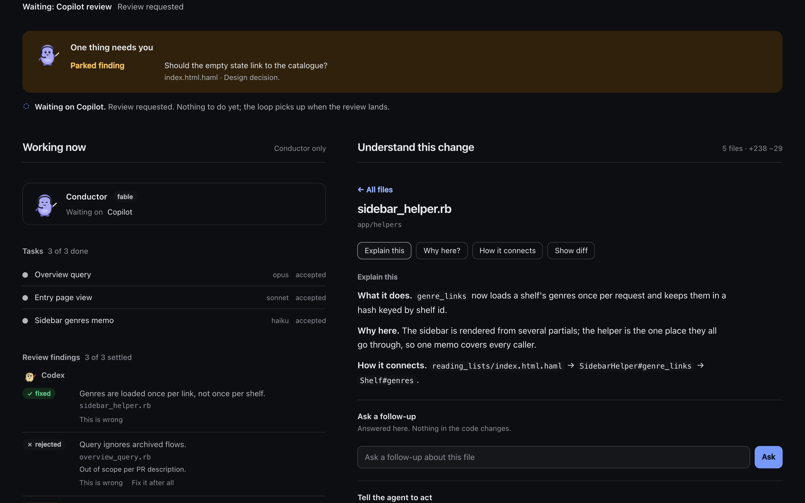

def
genre_links(shelf)
@genre_links ||= {}
@genre_links[shelf.id] ||= shelf.genres
end
class
OverviewQuery
def
call(reader)
flows.where(reader:).order(:position)
end
PR #482 · +238 −29
Can you trust it?
Do you still understand it?
>
SC-12345
Reading list overview
Shortcut story or GitHub issue
PR #482
Draft pull request
reviewed
PR description
What
Why
How
Test Steps
Build waits
2 open questions
questions answered
✓ Signed off by you
Plan
test first
Overview query
opus
failing
passing
Entry page view
sonnet
failing
passing
Sidebar genres memo
haiku
failing
passing
Break one line on purpose
if genres.size
>
>=
0
lists genres for a shelf
killed
shelf without genres
survived → missing test
localhost:3001/reading-lists
Overview shows one tile per shelf
Sidebar lists the genres
Empty shelf shows the empty state
An agent that never saw the code
screenshot kept
back to Build
Second model
Copilot
fixed
rejected
parked for you
N+1 query
Archived flows
Empty state link?
Label typo
127.0.0.1:4317



The stages
Who is working on what
What was tested
127.0.0.1:4317

Tell the agent to act
Agent
note picked up
Some things it will never do
Pushes only to the story branch
Never merges
you
A human approves. A human merges.
>
Shortcut CLI and the start-story skill
GitHub CLI, signed in
A second model for the review
A browser for the verifier
story
-
loop
One story. Nine stages. You sign, you understand, you merge.